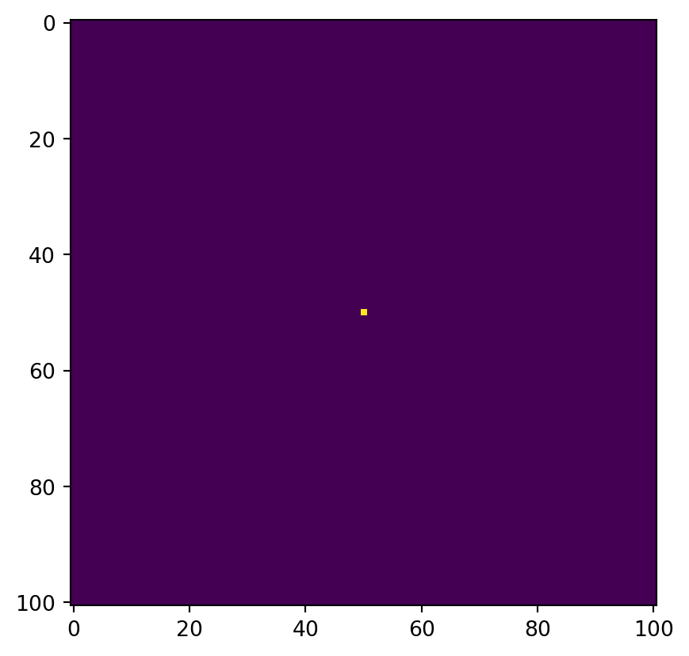
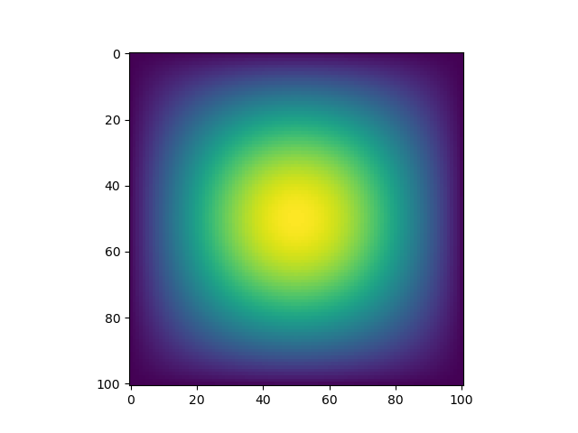
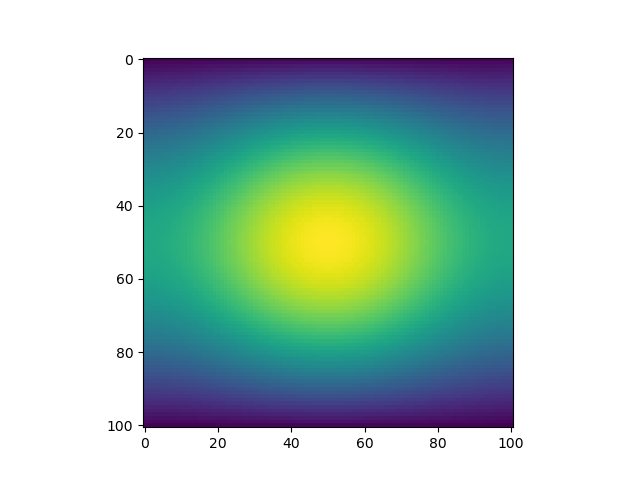

N = 101
epsilon = 0.2In this blog assignment, you will conduct a simulation of two-dimensional heat diffusion in various ways.
In the lecture notes, we represented the steps to simulate one-dimensional heat diffusion as a sequence of matrix-vector multiplications. Let’s expand it to two dimensions.
In two-dimensions, the heat equation reads: \[\frac{\partial f(x, t)}{\partial t} = \frac{\partial^2 f}{\partial x^2 } + \frac{\partial^2 f}{\partial y^2 }\;.\] Using a similar discretization scheme as in the one-dimensional case, let’s put: \[ x_i = i \Delta x,\;\; y_j = j \Delta y,\;\; t_k = k \Delta t, \] for \(i = 0, \cdots, N-1\); \(j = 0, \cdots, N-1\); and \(k = 0, 1, 2 \cdots\).
When we define \(u_{i, j}^k = f(x_i, y_j, t_k)\), the update equation in discrete time can be represented as: \[ u_{i, j}^{k+1} \approx u_{i, j}^k + \epsilon \left(u_{i+1, j}^k + u_{i-1, j}^k + u_{i, j+1}^k + u_{i, j-1}^k - 4 u_{i, j}^k\right), \] where \(\epsilon\) is a small parameter. The boundary condition can be constructed to allow heat to escape, as follows: \[ u_{-1, j}^k = u_{N, j}^k = u_{i, -1}^k = u_{i, N}^k = 0. \] We are not explicitly allocating space for \(u_{-1, j}^k\), \(u_{N, j}^k\), \(u_{i, -1}^k\), or \(u_{i, N}^k\). (Note: the index -1 here does not mean the last index as in Python indexing; it just means \(x = - \Delta x\) or \(y = - \Delta y\).)
For this homework, we will use:
and we will use a similar initial condition as in the 1D case: putting 1 unit of heat at the midpoint.
import numpy as np
from matplotlib import pyplot as plt
# construct initial condition: 1 unit of heat at midpoint.
u0 = np.zeros((N, N))
u0[int(N/2), int(N/2)] = 1.0
plt.imshow(u0)
1. With matrix multiplication
As in the linear algebra lecture, let’s use matrix-vector multiplication to simulate the heat diffusion in the 2D space. The vector here is created by flattening the current solution \(u_{i, j}^k\). Each iteration of the update is given by: (EDITED 2/20)
def advance_time_matvecmul(A, u, epsilon):
"""Advances the simulation by one timestep, via matrix-vector multiplication
Args:
A: The 2d finite difference matrix, N^2 x N^2.
u: N x N grid state at timestep k.
epsilon: stability constant.
Returns:
N x N Grid state at timestep k+1.
"""
N = u.shape[0]
u = u + epsilon * (A @ u.flatten()).reshape((N, N))
return uThat is, we view \(u_{i, j}^k\) as the element with index \(N \times i + j\) in a vector of length \(N^2\). Put this function in the file heat_equation.py. Let’s follow the indexing used in the update equation above. The matrix A has the size of \(N^2 \times N^2\), without all-zero rows or all-zero columns. The corresponding matrix A is given by:
n = N * N
diagonals = [-4 * np.ones(n), np.ones(n-1), np.ones(n-1), np.ones(n-N), np.ones(n-N)]
diagonals[1][(N-1)::N] = 0
diagonals[2][(N-1)::N] = 0
A = np.diag(diagonals[0]) + np.diag(diagonals[1], 1) + np.diag(diagonals[2], -1) + np.diag(diagonals[3], N) + np.diag(diagonals[4], -N)Define a function get_A(N), that takes the value N as the argument and returns the corresponding matrix A in heat_equation.py.
Let’s run the simulation with get_A() and advance_time_matvecmul() we defined. Run the code for 2700 iterations. How long does it take? Visualize the diffusion of heat every 300 iterations. Since our grading is PDF-based, please use a 3x3 grid of 2D heatmaps or contour plots. You are welcome to create an animation later. Since we want to compare computation time between multiple methods, we should not count the time needed for visualization. Thus, we need to store the intermediate solutions in a separate array.
At the end of the run, your solution should be symmetric and invariant under 90-degree rotations. It should look like:

but not like:

2. Sparse matrix in JAX
In fact, the performance of Part 1 is supposed to be excruciatingly slow. While we can use the underlying optimized matrix multiplication routine from BLAS (basic linear algebra subprograms), it is not particularly effective here, as the matrix A has less than \(5N^2\) nonzero elements out of \(N^4\) elements. Most of operations are wasted for computing zeros. Let’s use the data structure that exploits a lot of zeros in the matrix A: sparse matrix data structures. The JAX package holds an experimental sparse matrix support. We can use the batched coordinate (BCOO) format to only use \(O(N^2)\) space for the matrix, and only take \(O(N^2)\) time for each update.1
Let’s define the function get_sparse_A(N), a function that returns A_sp_matrix, the matrix A in a sparse format, given N in heat_equation.py. Repeat Part 1 using get_A_sparse() and the jit-ed version of advance_time_matvecmul.
Run the code for 2700 iterations. How long does it take? Visualize the diffusion of heat every 300 iterations.
3. Direct operation with numpy
The matrix-vector multiplication approach is useful, particularly in other PDE problems like Poisson equations, where the matrix equation has to be solved. However, with the heat equation, it is not something absolutely necessary in terms of computation. It could be simpler with vectorized array operations like np.roll(). Write a function advance_time_numpy(u, epsilon) that advances the solution by one timestep in the file heat_equation.py. You may pad zeroes to the input array to form an \((N + 2) \times (N + 2)\) array internally, but the argument and the returned solution should still be \(N \times N\).
Run the code for 2700 iterations. How long does it take? Visualize the diffusion of heat every 300 iterations.
4. With jax
Now, let’s use jax to do the similar using just-in-time compilation, defining a function advance_time_jax(u, epsilon) in heat_equation.py – without using (sparse) matrix multiplication routines. It will be simple to use the function advance_time_numpy() as the starting point. Don’t forget to jit! Keep in mind that jax does not support index assignment.
Run the code for 2700 iterations. How long does it take? It is a good idea to first run it for a small number of iterations to get it compiled, and then run it again with the full 2700 iterations to get high performance with precompiled code. It is possible to make it faster than Part 3, excluding the compilation time. Visualize the diffusion of heat every 300 iterations.
5. Comparison
Compare the implementation and performances of the four methods. Which one is the fastest? Which one was easier for you to write?
Specifications
Please remember that you must meet all specifications in order to receive credit on the first submission!
Format
- As always, please submit the PDF printout of your blog post preview to the “pdf” window, and any code you wrote (other than the
heat_equationmodule) to thefileswindow, including the filesindex.ipynbandindex.py. Please submit the fileheat_equation.pyto the autograder.
Coding Problem
- The functions work correctly – checked by autograder.
- The contents of all the functions are displayed in the blog post with
inspect.getsource().
Part 1
- The visualized solution appears correct – the solution should be symmetric, invariant under a 90-degree rotation.
- The time elapsed is shown, excluding time used for visualization.
Part 2-4
- The function is implemented as required.
- The time elapsed is shown, excluding time used for visualization.
- Part 2 should be at least 10x faster than Part 1.
- Part 3 should be at least 100x faster than Part 1.
- Part 4 should be about twice as fast as Part 3.
- The visualized solution appears correct.
Part 5
- The four implementations and their performances are compared.
Style and Documentation
- Code throughout is written using minimal repetition and clean style.
- Docstrings are helpful.
- Please make sure to include useful comments and detailed explanations for each of your code blocks.
- Any repeated operations should be enclosed in functions.
Writing
- The blog post is written in tutorial format, in engaging and clear English. Grammar and spelling errors are acceptable within reason.
Footnotes
There are several sparse matrix representations for more general sparsity patterns, including CSR (Compressed Sparse Row), CSC (Compressed Sparse Column), COO (COOrdinate format), etc. They are available in
scipy.↩︎